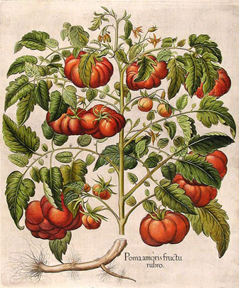
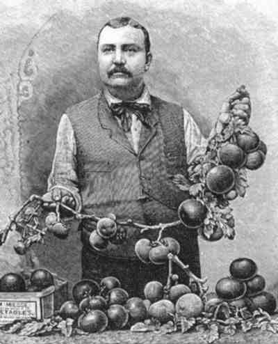

The wild species originated in the Andes Mountains of South America, probably mainly in Peru and Ecuador, and is thought to have been domesticated in pre-Columbian Mexico; its name is derived from the Náhuatl (Aztec) word tomatl. The tomato was introduced to Europe by the Spanish in the early 16th century, and the Spanish and Italians seem to have been the first Europeans to adopt it as a food. In France and northern Europe the tomato was initially grown as an ornamental plant and was regarded with suspicion as a food because botanists recognized it as a relative of the poisonous belladonna and deadly nightshade. Indeed, the roots and leaves of the tomato plant are poisonous and contain the neurotoxin solanine. 
The Italians called the tomato pomodoro (“golden apple”), which has given rise to speculation that the first tomatoes known to Europeans were yellow. It has been suggested that the French called it pomme d’amour (“love apple”) because it was thought to have aphrodisiacal properties. Some scholars assert, however, that the tomato was at first taken to be a kind of eggplant, of which it is a close relative. The eggplant was called pomme des Mours (“apple of the Moors”) because it was a favourite vegetable of the Arabs, and pomodoro and pomme d’amour may be corruptions of that name. 
Tomatoes were introduced to North America from Europe. Thomas Jefferson is known to have raised them at Monticello in 1781. The tomato was used for food in Louisiana as early as 1812, but not in the northeastern states until about 1835. It did not attain widespread popularity in the United States until the early 20th century. The plant is now grown commercially throughout the world.
Fruit or vegtebale?
Ever wonder why we consider a tomato a vegetable even though it is a fruit? You can lay part of the blame on the U.S. Supreme Court and maybe some on government greed. In 1887, U.S. tariff laws imposed a 10 percent duty on vegetables, but none on fruit. A tomato importer named John Nix sued the tax collector for the port of New York, Edward L. Hedden, arguing that tomatoes, since they were “really” fruits, should be exempt from the tax. Read Nix v. Hedden, 149 U.S. 304 (1893) here.
The botanical claim was not in dispute; tomatoes, as the seed-bearing ripened ovary of a flower, are fruits. Yet in a triumph of ordinary language over scholarly, the highest court of the land ruled in 1893 that the tomato was a vegetable and therefore subject to the tariff. In his decision, Justice Gray wrote: “Botanically speaking, tomatoes are fruits of a vine, just as are cucumbers, squashes, beans, and peas. But in the common language of the people … all these are vegetables … which, whether eaten cooked or raw, are … usually served at dinner in, with or after the soup, fish or meats which constitute the principal part of the repast, and not, like fruits generally, as dessert.” If you’re not too distracted by the vision of a Supreme Court justice pontificating on the distinction between dinner and dessert, you can contemplate two further botanical curiosities: First, most of us have heard that the tomato is “really” a fruit, but did you know that it is even more really a berry? Yes, really. Furthermore, this plant that most Americans grow exclusively as an annual is actually a perennial and will grow as such in its native and wild state. In fact, if inclined, you can nurse a tomato through the winter indoors and set it out again the next year.